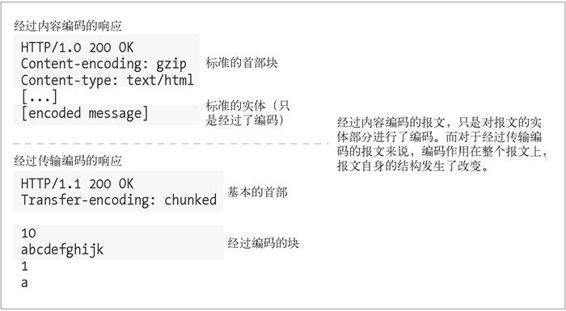
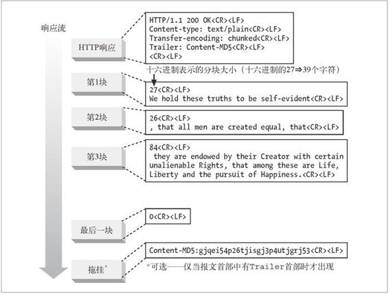
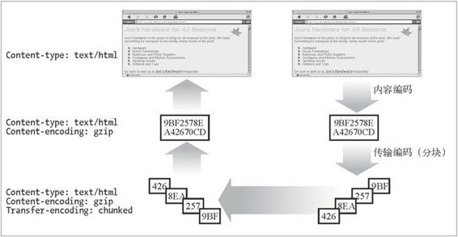

15.6 传输编码和分块编码
前一节讨论的内容编码，是对报文的主体进行的可逆变换。内容编码是和内容的具体格式细节紧密相关的。例如，你可能会用 gzip 压缩文本文件，但不是 JPEG 文件，因为 JPEG 这类东西用 gzip 压缩的不够好。
本节讨论传输编码。传输编码也是作用在实体主体上的可逆变换，但使用它们是由于架构方面的原因，同内容的格式无关。如图 15-5 所示，使用传输编码是为了改变报文中的数据在网络上传输的方式。

图 15-5 内容编码和传输编码的对比
15.6.1 可靠传输
长久以来，在其他一些协议中会用传输编码来保证报文经过网络时能得到“可靠传输”。在 HTTP 协议中，可靠传输关注的焦点有所不同，因为底层的传输设施已经标准化并且容错性更好。在 HTTP 中，只有少数一些情况下，所传输的报文主体可能会引发问题。其中两种情况如下所述。
未知的尺寸
如果不先生成内容，某些网关应用程序和内容编码器就无法确定报文主体的最终大小。通常，这些服务器希望在知道大小之前就开始传输数据。因为 HTTP 协议要求 Content-Length 首部必须在数据之前，有些服务器就使用传输编码来发送数据，并用特别的结束脚注表明数据结束。1
1 尽管可以因陋就简地用关闭连接作为报文结束的信号，但这种方法不能用于持久连接。
安全性
你可以用传输编码来把报文内容扰乱，然后在共享的传输网络上发送。不过，由于像 SSL 这样的传输层安全体系的流行，就很少需要靠传输编码来实现安全性了。
15.6.2 Transfer-Encoding首部
HTTP 协议中只定义了下面两个首部来描述和控制传输编码。
Transfer-Encoding
告知接收方为了可靠地传输报文，已经对其进行了何种编码。
TE
用在请求首部中，告知服务器可以使用哪些传输编码扩展。2
2 如果这个首部起名叫 Accept-Transfer-Encoding，它的意义就会更直白。
下面的例子中，请求使用了 TE 首部来告诉服务器它可以接受分块编码（如果是 HTTP/1.1 应用程序的话，这就是必须的）并且愿意接受附在分块编码的报文结尾上的拖挂：
GET /new_products.html HTTP/1.1
Host: www.joes-hardware.com
User-Agent: Mozilla/4.61 [en] (WinNT; I)
TE: trailers, chunked
...
对它的响应中包含 Transfer-Encoding 首部，用于告诉接收方已经用分块编码对报文进行了传输编码：
HTTP/1.1 200 OK
Transfer-Encoding: chunked
Server: Apache/3.0
...
在这个起始首部之后，报文的结构就将发生改变。
传输编码的值都是大小写无关的。HTTP/1.1 规定在 TE 首部和 Transfer-Encoding 首部中使用传输编码值。最新的 HTTP 规范只定义了一种传输编码，就是分块编码。
与 Accept-Encoding 首部类似，TE 首部也可以使用 Q 值来说明传输编码的优先顺序。不过，HTTP/1.1 规范中禁止将分块编码关联的 Q 值设为 0.0。
HTTP 将来的扩展可能会推动对更多传输编码的需求。如果真的如此，那分块编码仍应始终作用在其他传输编码之上，这样就保证数据可以像隧道那样“穿透”那些只理解分块编码但不理解其他传输编码的 HTTP/1.1 应用程序。
15.6.3 分块编码
分块编码把报文分割为若干个大小已知的块。块之间是紧挨着发送的，这样就不需要在发送之前知道整个报文的大小了。
要注意的是，分块编码是一种传输编码，因此是报文的属性，而不是主体的属性。本章前面部分讨论过的多部分编码，就是主体的属性，它和分块编码是完全独立的。
分块与持久连接
若客户端和服务器之间不是持久连接，客户端就不需要知道它正在读取的主体的长度，而只需要读到服务器关闭主体连接为止。
当使用持久连接时，在服务器写主体之前，必须知道它的大小并在 Content-Length 首部中发送。如果服务器动态创建内容，就可能在发送之前无法知道主体的长度。
分块编码为这种困难提供了解决方案，只要允许服务器把主体逐块发送，说明每块的大小就可以了。因为主体是动态创建的，服务器可以缓冲它的一部分，发送其大小和相应的块，然后在主体发送完之前重复这个过程。服务器可以用大小为 0 的块作为主体结束的信号，这样就可以继续保持连接，为下一个响应做准备。
分块编码是相当简单的。图 15-6 展示了一个分块编码报文的基本结构。它由起始的 HTTP 响应首部块开始，随后就是一系列分块。每个分块包含一个长度值和该分块的数据。长度值是十六进制形式并将 CRLF 与数据分隔开。分块中数据的大小以字节计算，不包括长度值与数据之间的 CRLF 序列以及分块结尾的 CRLF 序列。最后一个块有点特别，它的长度值为 0，表示“主体结束”。

图 15-6 剖析分块编码报文
客户端也可以发送分块的数据给服务器。因为客户端事先不知道服务器是否接受分块编码（这是因为服务器不会在给客户端的响应中发送 TE 首部），所以客户端必须做好服务器用 411 Length Required（需要 Content-Length 首部）响应来拒绝分块请求的准备。
分块报文的拖挂
如果客户端的 TE 首部中说明它可以接受拖挂的话，就可以在分块的报文最后加上拖挂。产生原始响应的服务器也可以在分块的报文最后加上拖挂。拖挂的内容是可选的元数据，客户端不一定需要理解和使用（客户端可以忽略并丢弃拖挂中的内容）。3
3 trailer（拖挂）首部是在最初的分块编码被加入到 HTTP/1.1 规范的草案之后才加入的，因此有些应用程序可能不理解这个首部（或者不理解拖挂），尽管它们声称是兼容 HTTP/1.1 的。
拖挂中可以包含附带的首部字段，它们的值在报文开始的时候可能是无法确定的（例如，必须要先生成主体的内容）。Content-MD5 首部就是一个可以在拖挂中发送的首部，因为在文档生成之前，很难算出它的 MD5。图 15-6 中展示了拖挂的使用方式。报文首部中包含一个 Trailer 首部，列出了跟在分块报文之后的首部列表。在 Trailer 首部中列出的首部就紧接在最后一个分块之后。
除了 Transfer-Encoding、Trailer 以及 Content-Length 首部之外，其他 HTTP 首部都可以作为拖挂发送。
15.6.4 内容编码与传输编码的结合
内容编码与传输编码可以同时使用。例如，图 15-7 中展示了发送方如何用内容编码压缩 HTML 文件，再使用传输编码分块发送。接收方“重构”主体的过程和发送方相反。

图 15-7 内容编码和传输编码结合
15.6.5 传输编码的规则
对报文主体使用传输编码时，必须遵守以下规则。
传输编码集合中必须包括“分块”。唯一的例外是使用关闭连接来结束报文。
当使用分块传输编码时，它必须是最后一个作用到报文主体之上的。
分块传输编码不能多次作用到一个报文主体上。
这些规则使得接收方能够确定报文的传输长度。
传输编码是 HTTP 1.1 版中引入的一个相对较新的特性。实现传输编码的服务器必须特别注意不要把经传输编码后的报文发送给非 HTTP/1.1 的应用程序。同样地，如果服务器收到无法理解的经过传输编码的报文，它应当用 501 Unimplemented 状态码来回复。不过，所有的 HTTP/1.1 应用程序至少都必须支持分块编码。